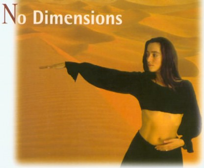
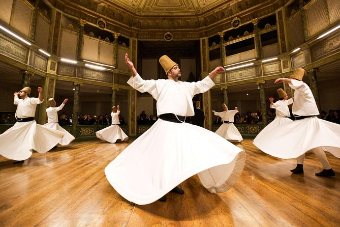
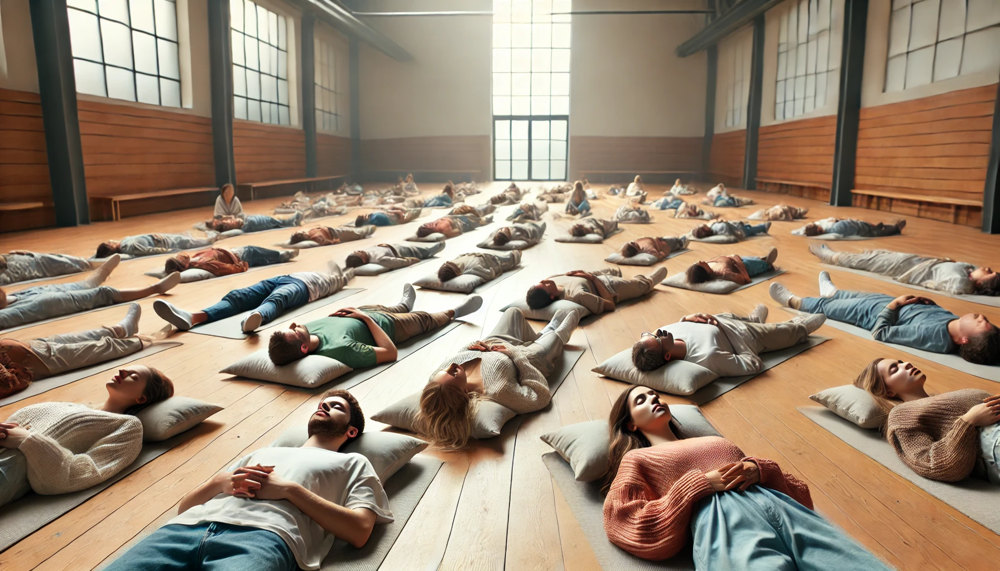

No Dimensions Meditation is a centering dance and a preparation for whirling. It originated from Gurdjieffian movements and lasts for one hour, divided into three stages. The first stage involves movements coordinated with breathing, the second is whirling, and the third is lying down with closed eyes for integration.
To practice this meditation: Download the audio and listen to it while following the steps below.
A six-part movement repeated continuously for 30 minutes. Stand with your hands on your belly. Follow these steps:
Always move from your center (hara) and use the music to maintain the correct rhythm. The dance should flow continuously and build in intensity over time. If your body falls down naturally, that's okay.
Whirl counterclockwise, keeping your eyes open slightly and your arms stretched out. Allow the whirling to take over while breathing normally. Adjust the direction if necessary and slow down to finish.
Lie down with closed eyes, preferably on your belly. Allow witnessing to happen, and simply observe the energy flow within you.
